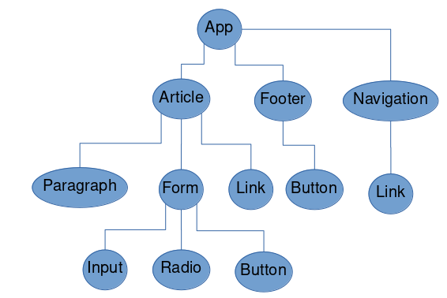
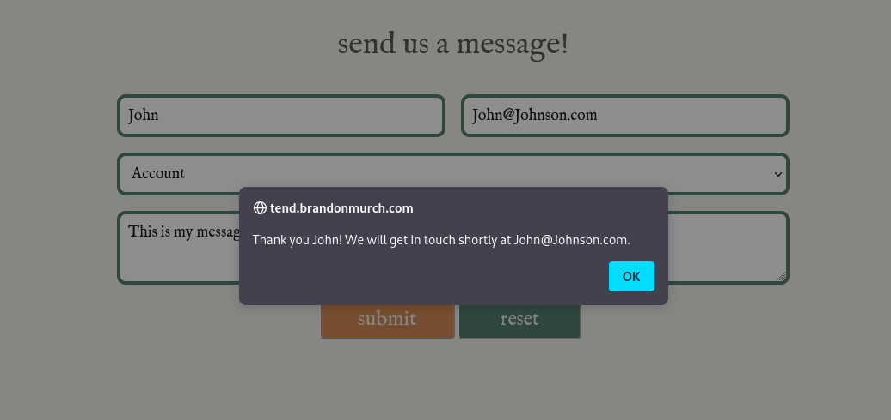
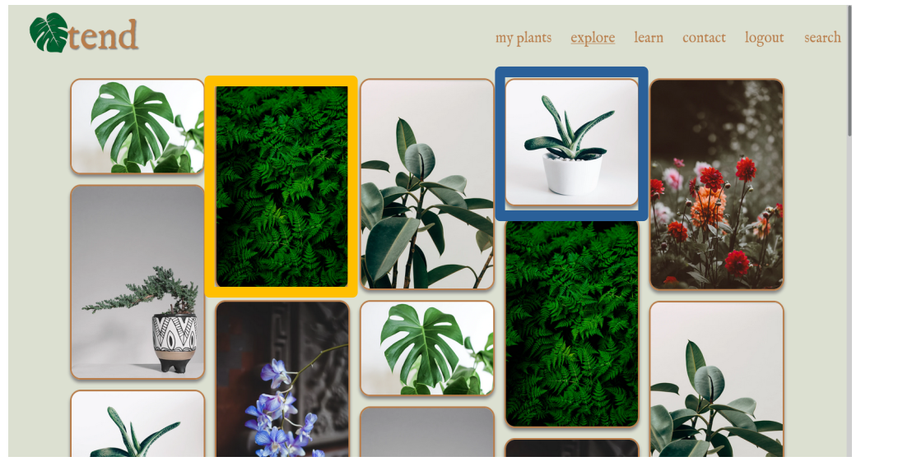
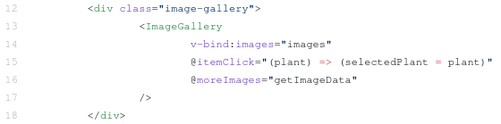

I will be aiming for a High Distinction grade within this
assignment, and also more
generally throughout the course. I have done a few MOOC courses relating to web
development, and have used similar frameworks to VUE, such as React and Angular. Since I
am familiar with these topics, I will use this course to fill in the gaps of knowledge, and focus
on the more advanced topics within the course, as well as the more formal proposal process.
I believe that this report reflects my targeted mark. Throughout the 8 weeks so far, my
reflections have provided information in different formats (text, rich text and images). I have
constantly been looking to outside sources to expand my knowledge of what is taught in
class, and offering my findings in detail. In addition, I have included a section at
the end this document reserved for useful code snippets. This way when I have
come across a problem which I have already solved, there is an easy place I can
refresh myself on the correct way to approach the problem. Finally I hope that my
report is easily readable for other people, as that has been my goal while writing
it.
Web development requires the use of three languages: HTML, CSS and Javascript. These
three languages work together to tell the browser how a website should look and act. By
understanding them thoroughly, we are able to create high quality, responsive websites, that
users will find visually pleasing and easy to use.
Hyper Text Markup Language is a structured way to store the information which will be displayed
on a webpage. More simply, HTML tells the browser WHAT to display.
HTML uses tags to hold the data. An example of a tag is: < body
><
∕body >. The
opening tag in blue, has a matching closing tag in red. Relevant information is placed
between the two tags. For our body example earlier, the browser will know that the
information for the body will be between the opening body tag and the closing body
tag.
Attributes for tags can be set within the opening tag. An example of using attributes to
assign a class to a p element would look like: <p class="text">. A class groups a number of
elements together, while another attribute id refers to only one element. There
are
many other HTML attributes to help us configure our elements. For a large list
of possible attributes. visit w3schools
To get started writing an HTML document, there is some boilerplate code that must almost
always be present:
Notice the indentation! To make this code easier to read, any
tag
that is inside
another tag will be indented further. For example, it is easy to see that the head tag is inside
the html tag. See the below table for descriptions of each tag.
|
Tag |
Description |
|
<!DOCTYPE> |
This is to let the browser know that this is a current HTML5 document. Previous versions of html will have different codes to insert here. (WHATWG 2021) |
|
|
|
|
<html>...</html> |
This is the html document, all information will be inside this tag |
|
|
|
|
<head>...</head> |
This contains information that will not be displayed within the webpage itself. |
|
|
|
|
<title>...</title> |
The title to the webpage. This will be displayed either in the browser’s title bar area at the top of the window, or the tab area. |
|
|
|
|
<script>...</script> |
This can either contain JavaScript code directly, or have a src attribute that links to an external file (either locally, or from a http link) |
|
|
|
|
<link> |
This links to some exterior document. The most common use of the link tag is to link to an external css file, but other documents that might be linked are icons, and licenses. (W3 Schools n.d.[g]) |
|
|
|
|
<body> |
Body contains all the information that will be displayed on the website itself. |
There are a few tags which don’t require a closing tag. These tags get information through other means, like the <img /> tag, which knows what image to render using the src attribute.
Tables are a great way to organise information on a website. They act the same way as tables
within commonly used word processors such as Microsoft Word with columns and rows.
The table is broken into two parts: <thead>
which uses <th> to create header
cells, and
<tbody> which uses <td> to create regular cells. The
graphic
below provides a clear
understanding of the structure of a table. Remember, the values for each cell are placed in
the inner most tags (th and td).
Forms are a collection of input fields within HTML. The user can enter different types of
information depending on the type of input field. When the form is submitted, the browser
will collect all the inputs and either send them to a url (if the attribute action
is present on
the form), or will send them to a JavaScript function (if the attribute onsubmit
is
present). An example of a form with the inputs name, age and location might be:
Which would output:


|
InputsIn HTML5, inputs can have a variety of
types (To name a few: text, number, email).
Some inputs limit what can be inputted into
the field, such as an input with the type
email will only accept properly formatted
emails. |
|
Another reason to use proper input types
is to create a responsive website, where a
different keyboard will appear on a mobile
device depending on the input type. For
example, an input with the type numbers
will bring up a keyboard on mobile devices
that only includes numbers. See an an
example of this below:
Input fields can also be displayed as
buttons, for example if the input type is
submit or reset as seen in the example form
above.
For accessibility reasons, each input must be accompanied by a label tag, which uses the for attribute to connect to an input’s id. |

|

|
Introduction to CSSCascading Style Sheets tells the browser
HOW to display the information in the
HTML file. Without CSS the default styling
is used, which means the webpage doesn’t
look very good, and will bore the user. This
is why we use CSS!
Basic SyntaxCSS uses property name and value pairs
separated by a colon. Different pairs are
separated by a semi-colon. An example
of making the text of an element blue
would be: "color: blue;" where color is the
property name(red) and blue is the property
value(blue).
|
Specifying the elements for these styles to be applied is done using some of the following
options:
|
tag |
This will apply a style to every element of a particular tag. For example, if p is used, every paragraph tag will have the specified styles applied. Note the lack of punctuation before the tag. |
|
.class |
This will apply styles to every element with a particular class. A class is specified with a period before the class name. |
|
#id |
This will apply styles to the element with a particular id. An id is specified with a hashtag before the id name. |
In the following example, every element with the class "specific-class" would have a margin
of 10 pixels and a border that is 1 pixel thick, solid and black.
There are three options for where to place CSS code:
This also effects how certain elements will override others. For example, any inline style will override any internal or external style, and any internal style will override any external style. The code is also read top to bottom, so styles at the bottom will override styles at the top.

(W3 2020)
Every element on a webpage is contained in the box above. The outer most layer, margin, is the space outside the border. This will change the perception of how far away the box is from other boxes. After the margins and border, is the padding, this is the space between the border and the content. Good use of the CSS box is critical to creating good spacing within a webpage.
JavaScript is a scripting language that is commonly used in web browsers. It has expanded
outside of its original purpose to be able to do much more with the help of other programs
such as NodeJS.
There are two options when declaring variables depending on if it is mutable or not. If the variable cannot be modified after initialization, use the keyword const followed by the variable name. For example const number = 2. If the variable is mutable, then use the keyword let. An example for this would be let letter = ’L’, where letter can be modified at a later time.
To declare a function, first use the function keyword, followed by the name, and a list of
parameters within parenthesis. The internal code of the function is then placed within curly
braces. To return a value to the calling function, simply use the keyword return.
Example:
Then to call this function, use addTwoNumbers(230, 384). Functions allow us to reuse code, instead of rewriting it every time.
Two useful objects within JavaScript is the window and document objects.
The window object references the entire browser window. This allows access to properties
such as the location, history, height, width, etc.
The document object is a child of the window object. This contains everything that is
displayed on the website. This includes the HTML and CSS. There are document methods
that allow you to get an element by its id ( getElementById() ), as well as by
its
class (
getElementsByClass() ), and many more. For a full list of methods available
within
Document, see
mozilla
JavaScript is covered in much greater detail in Week 3. See 4
.
Vue.js is a framework that allows the creation of responsive user interfaces while reducing
the amount of code actually written. It works with HTML/CSS/JavaScript to
provide re-usable components, templates, state handling, and much more. (VueJS
n.d.[e])
Within Vue, templates can be created. These templates contain the information displayed on
the website, similar to HTML. In fact all HTML will work within these templates,
but the templates include extra features to make responsive design much easier.
Templates allow for a reduction in code compared to traditional HTML. By finding
common structures within the HTML, templates can be created so that different
data
can be
inserted into these reusable structures. This means that we don’t have to spend time
re-writing the same structures over and over. Syntactically, Vue uses double curly braces to
represent areas where data will be inserted later. {{ name }} will be replaced
with the value
of the name variable.
(VueJS n.d.[f])
For a simple example of where templating can reduce the amount of code written, refer
back to 2.2.1
. Each html document you create has to have these pieces of code. Instead of
rewriting this every time, a template could be created as follows:
This could then be reused for many different websites with different information by
supplying different values for the variables title, paragraph, jsFile, etc.. This of course can be
expanded to much more complicated websites where there are many of the same pages.
Consider Facebook, where everyone has their own profile page. These pages are standardised
across the website to look the same, but the information is different on each one. A template
is made once, then whenever the page is rendered it is filled with the appropriate
data.
This then becomes even more powerful when responsive web apps are considered. If
required, different templates could be created for each style of device (small mobile, tablet,
desktop) to create a very different experience. When the user visits the web app,
the appropriate template will be selected and used, all while the data remains the
same.
Components are re-usable snippets of code that abstract away some code. Pre-defined
options(or "props") can also be passed to the components to affect what is rendered
making them much more flexible. Many components can then be built together to
form much larger components, and then those components combined to create a
whole application. All while using minimal code compared to pure HTML/CSS/JS.
|
In this small example, the link component
and the button component are reused
within two separate, larger components.
This is incredibly small compared to
many web apps, which would reuse
the components many, many times. This
reduces repetition of code. (VueJS n.d.[c])
|

|
This task provided a very basic example to help learn the bare bones of HTML, and its commonly used tags. It also allowed practice in creating both a table and input form.
The code can be viewed at GitHub
This task focussed on introducing CSS, which makes the website look attractive. It allows
practice with the structure of CSS, as well as with properties that are commonly
used.
Building upon the last task, I formatted the website using CSS. This allowed me to create
a website that has two columns. One which contains the table of entries, the other that
contains the form to input new entries. The image at the top of the page is then modified to
look slimmer and stretch the width of the window, while the title is centred below.
Using a two-column design used the space much more intelligently than the default
styling, which would have spread both the table, and form across the entire screen, using
double the vertical space.
See code on GitHub
See 2.3.1
since these tasks are combined into one website.
There are many ways to centre an element in CSS, this (9.2.2
) is a pretty simple
and useful one which can either centre an element horizontally, vertically or both.
This doesn’t rely on any of the more advanced CSS features such as flexbox or
grid.
I made a small JavaScript function that takes the inputs within the form, and dynamically
updates the table. I also created a separate website to calculate the inputted student scores.
This helped practice modifying the DOM dynamically with JavaScript, which allows for a
seamless experience as the user, since information or elements can be modified without
refreshing the page. This helps us to understand on a simple level, how frameworks such as
Vue work under the hood.
See code for the input form:
and for the student grades:
Being able to round numbers in JavaScript was useful in this project, since otherwise there could be tens of decimal places. To accomplish this I used variable.toFixed() [9.3.2 ]
Before form submission:
 After form
submission:
After form
submission:

|
Before score calculation:
 |
After score calculation:

|
A small Todo app with three default items of a classic grocery list. New tasks can be added
through the input text box. Tasks can be clicked to complete them.
This task introduced the concept of components. The component <todo-item> was
reused multiple times, reinforcing the utility of components. From this it shows
if they are this beneficial in smaller applications, they must be exponentially so
in large applications, making them incredibly important to understand for web
developers.
See the code on GitHub
I found Window.onLoad() [9.3.1
] to be useful in ensuring the entire page is loaded before Vue
tries to reference an element. Otherwise there were errors when placing scripts at the
beginning of the HTML file. The script would load before the HTML, and Vue would not be
able to find the element to attach itself to.

This week I have read through the Assignment 1: Guidelines and Rubrics. I have understood what is required of the assignment, and started to make notes of ideas/requirements that will help me to complete this assignment.
Next week I will do research and think of an idea for my project. I expect this to take a fair bit of time to find a good idea that can be original, as well as managed within the time limitations of the course. This should take me approx. 4 hours.
Last week we looked at web design using HTML, CSS and JavaScript. This week builds on
this by introducing techniques for creating better webpages. These techniques include the
best practice of responsive design, creating user stories in the design phase,
and
including HTML Media tags in the web page.
Responsive design is all about modifying how your website looks based on the device.
This is almost a mandatory practice now with the sheer number of users which
primarily browse websites on their mobile device which come in all shapes and sizes.
The most important part of responsive design is also the easiest. Using the <meta
name="viewport"> tag in the head tag of the HTML file tells the browser to
make the width
of the page dependent on the width of the device, rather than the number of pixels on the
screen. This is due to the high density of pixels on today’s smartphones. (Lepage and Andrew
2020)
Adding the initial-scale=1 attribute to the meta tag will help with smartphones in
landscape view.(ibid.)
Curious in the difference the meta viewport tag makes, I looked for examples of the difference. I found a side by side comparison on W3 Schools (W3 Schools n.d.[l]):
 Without viewport. |
 With viewport. |
For a better user experience, only scroll vertically. This is what modern users are accustomed
to, and scrolling horizontally or zooming to see a page properly will cause frustrations.
(Lepage and Andrew 2020)
For elements, it is preferred to assign size by percentage of parent element. This means that
as the screen grows, so too does the element in proportion. Details such as margins, padding
and font, should continue to use constant values.
Flexbox allows multiple elements within a row to be spread out various ways. Flexbox can
evenly spread out these elements, or change the size of the elements proportionally to the
row. When adding more elements, flexboxes will wrap around automatically. This
creates a responsive design, while being very easy to develop by the developer.
CSS grid splits a container into grids. This allows for a container to be divided into the
specified ratios. One part of this container is known as 1fr. For example, if there was a
container that had two children, one was 1fr, and the other was 3fr, the one child would take
up 25% of the space, and the other would take up 75% of the space. See the example
below:

Media queries allow CSS to be specified depending on the screen size. This means
that the same HTML and JavaScript can be used, while there are two completely
different styles. Alternatively the two versions of the element could share many
styles, and only differ with a few dimensions. Both scenarios are possible with media
queries
This allows the creation of "breakpoints" or points where the
change in screen size,
changes the layout of the page. Major breakpoints occur when there are significant layout
changes, such as shifting from horizontal placement, to vertical. Minor breakpoints are where
there is a shift in a smaller detail of the screen such as padding, or font-size. The syntax is as
follows:
(ibid.)
User Stories are a way of describing software requirements while skipping over the
implementation details. It takes it a step further by placing the developer in the shoes of the
user. This allows the developer to easily understand what is important to the user, how it will
effect them and the urgency of the potential change.
User stories can be written in the following formula:
As a user, I want a feature so that I can motivation
Different user personas can be specified so that distinct groups of users can be targeted
(who), understanding what is important to
them.
These users will be connected to a specific
feature, with a short explanation of why these features are important to these
specific
users.
Although this formula shouldn’t be a strict rule, and is more of a guideline for
introducing the topic. The important part is that the sentence covers the who,
what, and
why.
User stories can also be broken up into three categories:
Large stories.
General goals for the software.
Usually the starting point for all user stories.
Can be broken down into a few user stories.
Small stories, usually smaller implementations that help with user stories.

|
These can be arranged in a table within
a word document, but another, more
interactive, method of writing out user
stories within a physical location is Post-it
notes. These can be colour coded based
on size/priority. When a developer wants
to implement a feature, they will grab a
Post-it note and bring it to their desk, read
and understand the requirements, and then
write the implementation.
|
Html Media tags are a way to add dynamic media into a website, instead of only static text
and images. There are a few with varying uses:
|
|
|
|
<video>
|
Loads a local video, which can be either mp4 or ogg. Possible attributes on the video tag are controls, width, height, autoplay and muted, which are all fairly self-explanatory (W3 Schools n.d.[h]) |
|
|
|
|
<audio>
|
Much the same as video, except the tag is audio instead of video. Uses mp3 instead of mp4, and does not have the height or width attributes. (W3 Schools n.d.[m]) |
|
|
|
|
<canvas> |
Creates a canvas on the screen which can then be drawn upon. This can be used to render graphics in real-time. |
|
|
|
An API that allows the developer to specify if an element is "draggable", and the actions that
occur when that element is dropped. Most frequently the dropped element will be added as a
child of the element it is dropped on. (W3 Schools n.d.[e])
A useful application of this feature might be for a ToDo list. Users will want to reorder
the list so they can apply a manual priority for each task. Dragging and dropping is an
intuitive way to do this.
Accessible through JavaScript’s navigator.geolocation which shares the users current location. Modern browsers will now ask the user if they would like to share their information, so this shouldn’t be relied upon. (W3 Schools n.d.[f])
Since I am just starting out in the web development, it is handy to investigate how other sites are built. I then can observe what works well from a user perspective, and what falls short. Taking this I am able to learn from it and adapt it into my own style for my own websites.
Please see 3.4.1 for further information about my proposal idea.
Two websites I found to be similar were Pinterest and garden.org. Pinterest because they are an image driven, social website, and garden.org for the horticulture connection.
Pinterest as a large tech company and therefore has a good responsive design.
|
Pinterest include the meta viewport tag in
their header.
They use a number of columns to display images. Wider the screen, the more columns there are on the screen. They keep these columns at a fixed width of 252 px, and change the margins of the page accordingly. The large container is styled using media tags, changing the width as necessary. Each element is loaded individually with JavaScript, and transformed/translated into place. The distances are calculated by knowing the previous images sizes as well as margins. |
|

The navigation bar is also responsive. The main change is the search bar growing with the
size of the screen to fill the navigation bar. Some features (such as advanced search) will
disappear on lower widths when there isn’t enough room. Finally on very small
screens, the search bar becomes a button that users press to open up the search bar
below.

On individual profile pages, the layout changes depending on the size of the screen. For smaller screens, the image/video is what you initially see, then scroll for the text/information. On larger screens, the image/video is on the left, while the information is on the right.

garden.org is also quite responsive. For larger screens (> 1000px), there are two columns on the home screen, one for images the other for comments. For smaller screens, there is only one column, with comments being below images. These two columns grow and shrink depending on the size of the screen. The images within these columns are in columns, and the number of columns changes based on the screen width.


When clicking on an image, a pop up window appears containing a larger version of the image. This grows as the screen grows, when it reaches a certain point ( 800px), it won’t grow any more, but will stay centred in the screen.

garden.org has a much more of a grid-like feel compared to Pinterest since every image is the exact same size in the gallery. This leads to the website not feeling as fluid, even though it is still very responsive.
Using CSS is the most efficient, and lightweight way to make a website responsive. Using the media tags, it is easy to create multiple versions of a design that adapts automatically. These also don’t rely on the user having JavaScript enabled.
|
For Task 2, I decided to mock up the
single plant page for my proposal. The
information and photos just need to be
added in later. I have created a simple
layout of navigation bar at the top, as well
as a main content pop-up in the middle
of the screen. This will be overlayed on
the screen as it’s opened. On a desktop
(>1000px), the image will be on the left,
and the text will be on the right. On a
smaller device, the image will be prominent
when the pop-up is opened, and the text
will be below for the user to scroll through.
There is another major breakpoint at 700px. Larger screens will have text in the navigation bar. Smaller screens will only have a search icon and a menu icon (which opens up a drop down menu with further options). |

|

For the source code go to GitHub
This task provided many useful bits of CSS codes to perform certain tasks. I would often find
myself knowing what I wanted the website to look like, but not knowing how to do it. Some
research led to the following code snippets.
I wanted to create a more custom and identifiable appearance for my website., so I
decided to use a custom font. I learned that the @font-face command needed to be used to
incorporate a custom font. I downloaded my custom font locally, then used 9.2.6
to add it to
the website.
I also discovered another way to centre an element using flex-boxes. 9.2.3
.
Adding box shadows to my UI dramatically increased the visual appeal, creating a sense
of depth for the user. 9.2.4
.
Since there were two edges of an image that touched the corners of a rounded container, I
needed to individually round those two corners using 9.2.5
.
Since there was an inner element that needed to scroll, I wanted to modify the scrollbar. I
used 9.2.7
to accomplish this.
User stories are a very useful tool in the planning parts of software development. Putting
yourself in the user’s shoes to determine what is important to them, and what features need
to be implemented help create understanding, as well as the ability to prioritise what is
important for these users.
Pre-designing UI within an application such as Figma saves a lot of time in the overall
process. It is much easier to change a UI position, colour, etc. in such a program, rather than
rewrite the CSS in the actual web page each time. I found this out after spending a lot of
time re-creating the first UI in Task 2, then noticing the difference using Figma in Task
3.
|
Epic Stories |
Acceptance Criteria
|
Priority |
|
|
|
|
|
Epic #1: As a person with many plants, I would like to be able to keep track of the schedules for these plants so they can be healthy. |
|
High |
|
Epic #2: As a person who is new to horticulture, I would like to get new information about plants so that I am informed about how to care for them |
|
Medium |
|
Epic #3: As a social person, I would like to be able to share my plants, and interact with others, so that I am able to share experiences and ideas. |
|
Low |
|
User Stories |
Acceptance Criteria
|
Priority |
|
|
|
|
|
User Story #1: As a user, I would be able to create a plant profile so that I can store information about my plants. |
|
High |
|
User Story #2: As a user, I would like auto-generation of a schedule for my plants that I can adjust, so that I am able to see when I need to water/fertilize/re-pot my plants. |
|
High |
|
User Story #3: As a user, I would like notifications about necessary actions so that I don’t forget to water a specific plant. |
|
High |
|
User Story #4: As a user, I would like to be able to search for information on specific plants so that I am able to anticipate the level of care for a future plant, or properly care for a current plant. |
|
Medium |
|
User Story #5: As a user, I would like to be shown new horticulture tips, so that I am able to learn about new topics and concepts. |
|
Medium |
|
User Story #6: As a social user, I would like to discuss and exchange horticulture related ideas so I can expand my knowledge on more advanced topics, or ask more experience users for help. |
|
Low |
|
User Story #7: As a social user, I would like to share photos of plants I have grown so that I can proudly show off all my hard work |
|
Low |
|
User Story #8: As a plant enthusiast, I would like to browse photos of other plants so that I can gain inspiration and enjoyment. |
|
Low |
|
Sub Stories |
Acceptance Criteria |
Priority |
|
|
|
|
|
Sub Story #1: As a user I would like to login or create an account so that I can store information for later. |
|
High |
|
Sub Story #2: As a user I would like to input information about my plants so that I can reference it later. |
|
High |
|
Sub Story #3: As a user I would like to interact with my plants so I can record times I have watered, fertilized, etc.. |
|
High |
|
Sub Story #4: As a user I would like to search for species of plants, so I can easily find what I am looking for. |
|
Medium |
|
Sub Story #5: As a user I would like to get information for specific species. |
|
Medium |
|
Sub Story #6: As a user I would like to get random tips of the day for plants that I am interested in. |
|
Medium |
|
Sub Story #7: As a user I would like to learn the basics of horticulture to ensure I am doing things correctly. |
|
Medium |
|
Sub Story #8: As a user I would like to post to the discussion forum so I can discuss and share ideas with others. |
|
Low |
|
Sub Story #9: As a user I would like to message other users directly. |
|
Low |
|
Sub Story #10: As a user I would like to create a public profile for my plant. |
|
Low |
|
Sub Story #11: As a user I would like to browse other plant photos. |
|
Low |
I used Figma to design one of the pages for my application. I designed the "Share Plants"
page from my proposed web app. I decided on a fairly neutral, and natural colour scheme.
This was a change from the originally dark colours I was going to use for the website. Thanks
to Figma, this was a painless change. I was able to reuse my custom font from the earlier task
with my new colour palate.
The end result was:

Much of this design can be reused throughout the web app, such as the navigation bar at
the top, logo, etc. I will continue to use Figma to design the remaining pages of my web app
before fully implementing them in Vue.
I was able to get mock images from unsplash.com, which will be populated by real user images on the live version. The logo is a modified svg image from pixabay.com.
This task was helpful to become familiar with some of the media tags. The canvas tag in
particular, even though I have barely scratched the surface of what it can do. HTML has
come such a long way from simply displaying text and is incredible what it can currently do
just by itself.
 |
Explanation of Task WorkFor task 4, I decided to play around with
the video and canvas tag. For the video tag, I used the previous
template I was working on for my proposal
site, but instead of an image, it had a video.
This will allow users to be able to upload
videos as well as pictures. Plant users love
a good time lapse!
|
|
I also used the canvas tool, as well as
some JavaScript to animate a green wreath
around an idle mouse. The design needs
a little work aesthetically, but is a neat
concept. This is achieved by finding the
mouse with a "onmousemove" attribute on
the canvas. This allows the position to be
stored, and the countdown started. After
an certain number of seconds the wreath
begins forming. This makes use of the
quadraticCurveTo, as well as some basic
trigonometry/linear equations.
|
 |
For task 4 source code, see GitHub
Figuring out how to to draw a basic line on the canvas, I used 9.3.3 .
While playing around with the canvas, I tried to animate it by calling a function every x seconds to draw a new line. To accomplish this in JavaScript i used 9.3.4 .
This week, I have come up with the basic idea for my web application. I will create an online
website to store and share information about house plants. Part of the site will be a
place to store information about current plants including water schedule, notes, etc.
Another part will allow people to share experiences and photos of their plants.
Also throughout this weeks tasks, I have created one of the pages necessary, as well as worked on the mock-ups and user stories.
Next week I fill focus on finishing the proposal. This includes finishing the user stories, the proof of concept as well as the mock ups. I will then go over and review before submission. This should take approx. 8 hours.
This week extends our knowledge on JavaScript from week 1 (2.2.3 ), by introducing control statements, arrays, operations, JSON and jQuery. These concepts allow us to do more than simply modify the DOM and begin to incorporate logic into the websites.
Control statements allow us to create different paths that can be traversed in programs
depending on certain conditions.
If statements check a boolean expression (something is either
true
or false) and if the
result of that expression is true, the actions within that block will be executed.
There is also an else if statement that can occur directly after an if
statement.
This statement only occurs if the if statement was false, and the supplied boolean
expression is true. The last piece of this chain is an else statement. If all
previous
if and else if statements were false, the code within the else block will execute.

For statements that have many options, a switch statement would
be
a better option. In
a switch statement, the interpreter will compare the variable against each value. Once a value
matches the variable, the remaining code will be executed, or until a break is
reached. A
good code practice should be to always have a default case that runs if none of the other
cases match. Here is an example of a switch statement from the lecture that I have
modified:
This demonstrates the importance of remembering the break. In this code if the fruit was
Mangoes, Both the $2.49 a pound, and the $2.79 a pound messages would print. There might
be cases when you would want multiple variables to perform the same action. In this case
omitting the break is necessary.
Try/catch blocks is another control statement. Code within the
try
block is executed as
normal, and if an error occurs, the code within catch block will run. This
allows
the
program to handle the error smoothly. To highlight the importance of the try/catch;
if an error occurred outside of a try block, the program would immediately stop
(crash) and display an error code. In the following example, we are able to log
a message to the console, and then proceed to ask the user for a new file name.
Arrays are a collection of values stored in one variable in contiguous memory. Elements of an
array can be accessed by their index (which starts at 0 in JavaScript). The syntax in
JavaScript is to use square brackets, for example: array[2] would give the third
value of the
array.

JSON is a format for storing data. It uses key-value pairs to describe the data, the same way
that objects are created in JavaScript, hence the name JavaScript Object Notation. Basic
data structures can also be nested inside keys using the curly brackets {} for an object, or
square brackets [] for an array.
Operators allow us to compare two expressions. Here are some of the operators within
JavaScript:
|
|
|
|
> |
Is true if the left value is greater than the right. |
|
|
|
|
< |
Is true if the left value is less than the right. |
|
|
|
|
== |
Is true if both values are equal. |
|
|
|
|
!= |
Is true if both values are not equal. |
|
|
|
|
&& |
Combines two logical statements, only true if both individual expressions are true. |
|
|
|
|
∥ |
Combines two logical statements, true if either expression are true (or both). |
|
|
|
|
& |
Applies a bitwise AND to each value. That is goes bit by bit, through both variables and returns 1 if they are both 1, otherwise it returns the zero. The results are stored in a third variable. For example 10011 & 11001 = 10001. |
|
|
|
|
| |
The same as &, but it applies a bitwise OR. Returns 1 if either bit is one, but returns 0 if both are the same. |
|
|
|
|
^ |
The same as | but will also return 1 if both bits are 1. (Bitwise XOR) |
|
|
|
|
===
|
The difference between === and == is that === also checks type. For example 0 == "0" is true, but 0 === "0" is false. |
|
|
|
jQuery is a framework that shortens the amount of code needed when performing common
JavaScript tasks. For example, instead of:
document.getElementById("id").hide();
jQuery allows a shorter command:
$(’#id’).hide();
The $ is shorthand to show that it is a jQuery command.
Another area where jQuery helps reduce the amount of code is in network calls using AJAX. AJAX is Asynchronous Javascript And Xml. This allows to create calls to external urls, and then call function based on success or failure. This allows easy manipulation of the DOM based on queries to backend servers.
JavaScript has many built-in libraries and class methods. These accomplish common tasks, so
developers don’t have to constantly "re-invent the wheel".
These tasks help reinforce being able to learn and understand the documentation. This is critical when working on web applications since you won’t always have an instructor to run to when things go wrong, and must learn to teach yourself.
Task 1 was all about string manipulation. Since websites are about displaying information,
manipulating strings occurs often. Since strings are objects in JavaScript, they come with
some built-in methods. Some common methods are:
|
|
|
|
string.length |
Returns the number of characters in a string. |
|
|
|
|
string.splice() |
Two very similar methods. They return the characters between the specified start index and end index. The difference is that splice removes the character from the original string, while slice leaves the original string intact. |
|
|
|
|
string.replace() |
Finds the first argument within the string, and replaces it in the second argument. The first argument can also be a Regular Expression, making this function very powerful. |
|
|
|
|
string.toLowerCase() |
Turns every character either lowercase or uppercase respectively. |
|
|
|
|
string.trim() |
Removes any extra white-space at the beginning and the end of the string. |
|
|
|
|
string.padStart() |
Ensures the string is a certain length by adding padding if necessary. padStart() adds the specified padding character to the beginning, and padEnd() adds the padding to the end. |
|
|
|
(W3 Schools n.d.[k])

The source code for my task can be found at GitHub
The second task involved using Number methods and Array methods. These methods are
similar to the idea of the methods in task 1, but they apply to numbers and arrays
respectively.
|
|
|
|
number.toString() |
Changes the number to the type "string". |
|
|
|
|
number.toExponential() |
Returns the number in exponential form. |
|
|
|
|
number.toFixed() |
Returns the number, with a fixed amount of decimal places. |
|
|
|
|
number.toPrecision() |
Returns the number with a fixed number of digits. |
|
|
|
|
parseInt() |
Takes a string and returns it as a Number if possible. |
|
|
|
|
Math.round() |
Round the number to the nearest digit. ciel always rounds up, floor always round down. |
|
|
|
|
Math.random() |
Gives a random number between 0 and 1. |
|
|
|
|
|
|
|
array.toString() |
Converts the array to a string. |
|
|
|
|
array.join() |
Same as toString, but can specify what characters to place in between elements. |
|
|
|
|
Array.from() |
Returns a new array from whatever is provided as an argument. Useful for duplicating arrays. |
|
|
|
|
array.pop() |
Removes and returns the last or first element of the array respectively. |
|
|
|
|
array.push() |
Adds a value to the end or beginning of the array respectively. Returns the array length. |
|
|
|
|
array.concat() |
Merges an array passed as an argument into the original array. |
|
|
|

The source code for my task can be found at GitHub
JavaScript objects have methods for getting and setting internal values. This is an example of
encapsulation, a main concept of object-oriented design. Instead of having access to the
variables directly, the objects are interacted with using GET functions and SET
functions. GET functions return the value of the variable. SET functions take the
new value as an argument, and then changes the value of the variable internally.
Date is an object built into JavaScript that stores a particular date and time. This uses get functions to get either the whole date formatted in a particular manner, or parts of the date such as hours, months, etc. The set function of the date object allows the caller to set a particular part of the date such as hours, months, etc.

The source code for my task can be found at GitHub
This task was all about looking ahead to the basic concepts of Vue. Understanding the concepts well will allow us to more easily implement these concepts in code.
Computed property is a property based on another property. It is a function that modifies
another property and returns a value. This reduces the redundancy of code by reusing these
functions instead of putting them directly in the template. Another benefit to using
computed properties is that they are cached for better performance, and is only re-called
when the original property is modified.
Computed Properties are assigned using the computed key inside the component object. (Computed Properties n.d.)
Watchers are a more generic version of computer property. The two are different
because Watchers allow the observation of external variables and are not restricted to
Vue Properties. This is useful when using asynchronous calls as the base data.
Watchers are assigned using the watch key inside the component object. (ibid.)
Vue allows classes to be dynamically assigned based on variables. An object is passed in to
the attribute where the keys are the classes, and the paired values are the variables being
evaluated. If the variable is truthy, then the class will be applied. Many classes can be put
into the object.
Styles can also be assigned dynamically by passing in an object with style key-value
pairs.
Class and Style bindings use the v-bind:class="" or v-bind:style ="" syntax respectively. (Class and Style Bindings n.d.)
Conditional rendering allows the browser to render an element only a boolean expression is
true. If true, then the element will be rendered. If not, the element will not be
rendered.
Conditional rendering uses the v-if attribute in the html or templates. This can be combined with v-else-if and v-else to create multiple outcomes. (Conditional Rendering n.d.)
List rendering renders a component or template using each element in a list as the passed in
value. For example, if there was a list of [1,2,3], it would render one element, and pass in 1,
render the same element again and pass in 2, then finally render element once more and pass
in 3. This is very useful if you have a list of items that need to be rendered and reduces the
code needed to accomplish this.
This uses the v-for attribute in the html or templates. (List Rendering n.d.)
This allows Vue to monitor for specified actions being performed on the element. For example v-on:click will run whatever function is given when the element is clicked. This also allows the direct modification of component data instead of a function (for example: v-on:click="counter += 1" would increment the counter on click). Methods can be written in directly, or placed in the methods object within the component. (W3 Schools n.d.[b])
Form input bindings allow Vue to directly link inputs to variables. Whenever the value of an input changes, the variable in the component is updated. This is done by placing the variable being updated into the v-model attribute on the input element. (List Rendering n.d.)
Components allow reusing templates, methods, etc. based on different values being passed in.
This allows many of these components to be created without having to retype the boilerplate
code, methods, etc. This also also provides easy consistency when it comes to style.
A new component is defined in the JavaScript file. It gets created by calling Vue.component() and passing in the name of the component, as well as an object will all of the data, template, methods, etc.. (VueJS n.d.[c])
This week I have completed the remaining parts of my proposal. I designed every webpage in Figma, meaning the implementation should be quite painless. I have planned out the layout of my code and am ready to get started.
Next week I must start creating my webapp using HTML/CSS/JS/Vue. Specifically I would like to target the Nav bar and Image gallery components. This are probably the more complicated components within the web app and also the most reused. This should take me 4 hours.
The theoretical portion of this weeks information was based around the TCP/IP Protocol.
This is how most computers communicate across the internet. It is important to understand
not only design principles, and programming languages in web development, but also how the
internet itself works.
Files are too large to send all at once over the internet. Instead we break them up into many
packets, and send them one at a time. The size of these packets may vary, but the point is
that there are many of them for one file.
This layer is specific to each type of application and is how the applications connect to the internet. Each type of application will be given a port number. This allows many different services/applications to be running on a particular computer at one time. This also creates standards, so applications of the same type can communicate with each other effectively. An example of this is HTTP. This tells browsers and web servers how to communicate with each other. All of this information is bundled as a header on the data packet, and passed to the TCP layer. (How Does the Internet Work? 2002)
If the application layer is how applications communicate, then the TCP layer is how computers communicate. This is a set of standard pieces of information put together in a very specific format. This includes information like the number of packets being sent, a checksum to ensure no corruption, etc.
Now that we have all the information, the next part to be applied is the IP address or WHERE to send the packet. This is unique for each computer in the world, and is bundled on top of the tcp layer.
Finally the data-link layer is associated with the physical machines themselves. This is how the short jumps are addressed, from router to router as the message travels to its destination.

(Kbrose n.d.)
DNS or Domain Name System is an electronic address book for websites. Instead of having to
remember the IP addresses of the web server you would like to visit, it allows users
to remember more human-friendly addresses, such as www.deakin.edu.au. (How
Does the Internet Work? 2002) This is similar to a phone book, where instead of
remembering the phone number, you only have to remember the persons name.
Each time before connecting to a server, your computer must first get the IP address from the DNS server, so that it knows where to send the data.
The internet isn’t one solid "thing". Instead it is made up of many computers/routers/etc.
To
be able to communicate with another specific computer, the message must pass through a
chain of many other routers. This uses the MAC address discussed in 5.1.4
and the IP
address discussed in 5.1.4
.
Starting from the source computer, each computer finds a router which is closer to the end destination. The message is then sent to a router that is closer to the destination ip address using the router’s mac address. Then that router finds a closer router and passes the message along. This continues until the message finally gets to the destination.
But what are these routers? Surely they aren’t just the same routers in your home... No,
these are large industrial routers, and usually the first hop will be to your ISP (Internet
Service Provider), then a second one will be to a larger router(or groups of routers) called an
NSP (Network Service Provider). From here they can connect to other NSPs via an NAP
(Network access Point) or MAE (Metropolitan Area Exhanges). (ibid., The Internet Routing
Hierarchy)
|
The beauty of this is two fold. First of
all, there is no "set path" that a message
must travel. This helps to relieve congestion
within the network. Secondly, if there is
a break in the chain, it is very easy
for the routers to reroute the message to
another router, as long as it is closer to the
destination.
|
The practical tasks this week all focused on beginning to create websites in Vue. Using concepts that we researched last week such as declarative rendering, and conditionals, we are again able to reduce the amount of code needed compared to writing in plain HTML/CSS/JavaScript.
Declarative rendering in Vue is about dynamically creating webpages based on
templates. In the templates, placeholders will use double curly brackets {{}},with the
placeholder name being inside. This placeholder name will map to a variable in the
Vue/Javascript code. During rendering, Vue will grab the variable value and place it in
the placeholder. This way, each time the user visits the webpage, it can present
different information based on their query without writing millions of possible HTML
pages.
This becomes even more powerful, when different images, links, etc can be loaded into the
template. So that the same page layout can look drastically different.
For evidence of the completion of this tasks, I will provide the work in Vue I did for my
proof of concept. I used declarative rendering throughout the application. Here is one
example where the same coloured boxes are the same parts of a template. They are just filled
with different data:
See examples of my proof of concept at GitHub
The specific example is found at GitHub
Conditionals are a way of selecting whether to display a component or not. If the particular
variable is true, the component will be rendered. If not, the component will not be rendered
at all. The syntax for this within Vue is v-if, v-else, v-else-if. Within my project I used this
for a few things. Firstly, I used it in my main profile page as a mock router to switch between
pages before I implement Vue-Router. I also used it to render the pop up if a plant was
selected. If there was no plant selected, the pop up would not appear. Finally, a very
visual example is using v-if to toggle when the pop-up is displayed. If a plant is
stored in "popUpImage" then the pop up will be displayed, otherwise it won’t.
 |
|
There is an alternative syntax of v-show which still renders the component (unlike v-if),
but hides it using CSS.
Loops are used for rendering multiple elements, with a single template element. I used
this frequently to reduce the amount of code. For example, instead of creating each
navigation link, I created a template, then looped over an array to insert information for each
link. The example below shows that each blue box is actually the same element, but using
v-for to create multiple.

See examples of my proof of concept at GitHub
The specific example for v-if is located at GitHub
The specific example for v-for is located at GitHub
I focused on my proof of concept this week. I was able to complete the explore portion of my
application. Within this section I was also able to create the following components:
ImageGallery, SearchBar, ImageCard, NavigationBar, ContactForm, PopUp, and MenuIcon.
While doing this, I also explored several more advanced topics within Vue.
Within Vue there are ways to create custom events. These react the same way as native
HTML events, such as @click or v-on:click.
To create a custom event within the child component, Vue allows the use of the emit
method, with the following syntax: this.$emit(’customEvent’). This
will send the custom
event to the parent component whenever it is called. To let the parent know that the child is
capable of emitting this custom event, it must be placed in the emits array
like
so:
To react to the event in the parent component, simply use the same syntax as native
events. Continuing the example of ’customEvent’, the syntax used is @customEvent="...".
A second argument can be passed into $emit to pass a variable through to the parent
component. This allows the ability for two way binding, where two variables can be linked in
both the parent and child. Changing the value in one, will change the value in the other. The
syntax for this would be:
@customEvent="(data) => variable
=
data"(VueJS n.d.[a])
Vue Component LifecycleVue allows functions to be called at certain points relative to the creation of a component. Some options are:
More hooks can be found here: (VueJS n.d.[b]). |
 |
Slots are a way for full components or html to be easily passed into another component. In
addition to the default slot, slots can be named for multiple slots in one component.
To define the slot space, the slot element is used. To name it, use the name attribute. For
example: <slot name="slotName" />.
In the parent component, a default slot can be used like any HTML tag. Simply put the
slot template inside the child like so:
The template element is used to define what should be put inside a named slot. To choose
which named slot to use, the v-slot:name attribute is used. So to place html in the previously
mentioned slot, the syntax would be:
Refs give developers a way to reference components without having to use id or class. This is done by first setting the ref attribute on the component using a string. For example:
<component ref="referenceString" />
Then the component can be grabbed by using:
this.$ref.referenceString
(VueJS n.d.[g])
Unrelated to Vue, I also looked into the following:
This week I would like to incorporate Vue-Router into my program, and start creating the other parts of the website (My Plants, and Learn). The main reusable components I will need for this are lists to display cards for comments, articles, etc. Another important part will be to create the interface for adjusting plant settings. I suspect this all will take 4 hours.
The new concept for this week was UI design patterns. Two of the most well known are MVC and MVVM. This is relevant theoretical knowledge since Vue is an example of MVVM. If we are better able to understand this design pattern, then we can intern better understand Vue and its capabilities.
|
Model View
Controller was the original
Model-View design. This model looked to
solve how to structure large front end
codebases, and separate areas of concern.
As the name suggests it was made of up
three components, a model, a view and a
controller.
|
The controller handles all user interactions or events. When a button is clicked, the controller will decide what to do and modify the model accordingly. The controller is also in charge of which view to present to the user. This way many different views could be used depending on the situation.
This contains the data that will be loaded into the webpage. This is the component that will get information from a back-end or database, and is in charge of the applications state.
What the user sees. Using the observer pattern, the view is notified when a change occurs to the model, and then the view will fetch the new data.
(Syromiatnikov and Weyns 2014)
Model View View Model builds upon MVC. The main benefit of this is being able to reuse the business logic for multiple view-controllers, making the controller more UI focussed.
MVVM considers the view and the controller to be tightly coupled. This means that view handles both the displaying of information, as well as user inputs and events. The view can also pull data from the View Model and trigger methods within the view model based on user input.
The new component added when compared to MVC. It works between view and model. It handles all the logic and state within the application. View-model is unaware of view. Any updates within the view-model will be announced to subscribers, and then the subscribers can grab the update.
This is very similar to the model in MVC. Model is unaware of view or view-model. It simply
supplies the data to the application and modifies this data on request.
(ibid.)
Building on last weeks theoretical introduction to Vue concepts, this week we implement
them within our own project. Practicing these concepts, and seeing them in action, will help
our understanding of the theoretical side.
Components are ways to reuse pieces of code. Both presentation code and logic can be reused
within elements that perform similar tasks. This allows less repetition of code and the ability
to build applications much quicker.
The syntax for defining a component is:
Then to use this component simply use the tag in the html like so:
<component-name />
This will output the header, "This is a component", into the DOM.
Within my project, I have already used a few components, to encapsulate views, or to group re-usable code together. The most reused so far would be ImageCard, which is reused many times within Image Gallery. In the screenshot below, each picture is a separate ImageCard component which handles the click, hover and data display.
For a full list of components I have created see:
GitHub
I have explored Vue and implemented concepts so far in my project, as well as discussed them previously in this
report. See:
GitHub
To handle user input the v-on (or the shorthand @) keywords can
be used. This can be used
with many native events such as click. It can also be used for custom events. I
have described
such events here: 5.3.1
.
These events can either call methods in the methods object or they can modify properties
within the data object directly.
As with previous tasks, I have also used event handling throughout my project. A specific
example is watching for clicks on buttons using @click within the PopUp component. Where
clicking the
https://www.GitHub.com/BrandonMurch/SIT120/blob/main/Assignment%201/proof-of-concept/src/components/PopUp.vue
With Vue, components can be registered globally (6.2.2
), or locally. To register a component
locally, just store the component in a local variable like so:
Alternatively Vue components can be placed in their own .vue
file.
Their declaration is
handled implicitly, and the file can contain three tags [template, script and style] which
contain the relevant HTML, JavaScript and CSS respectively.
For a more in-depth description of Vue component registration, see 8.1.1
If we just used components with the same values every time, they wouldn’t be very reusable or useful. By defining options that can be passed into the component as "props", components become much more useful and versatile.
Using the v-bind keyword we are able to pass in this data. If
the
component accepted a
prop message, then to pass in a message, use v-bind:
The shorthand for v-bind would be simply :message="..."
See 5.3.1 for custom events and 5.3.1 for slots.
Dynamic components allow us to select which component to render dynamically. To do this,
use the following syntax:
Putting elements inside the <keep-alive>
element, as the name suggests will keep the
component alive. That is, the component will not be destroyed. This helps with loading times
on elements that are frequently switched between, or whose information won’t change.
Components can be rendered asynchronously. An example of this would be when the component renders only after information is received from the backend server. These components can even load other components while they are loading, or if there is an error.
There are a few ways to accomplish this within Vue. The first is to return the component
as a promise resolve:
(VueJS n.d.[d])
Another is dynamically importing the component:
(ibid.)
Finally Vue can also handle the loading, errors, delay and timeout of these async
components using the following:
(ibid.)
There are cases when the strict nature of Vue needs to be broken, giving more access to the
developer. These cases are very rare, and have serious drawbacks, so they should not be used
lightly.
Within Vue, any subcomponent can reference the root component with $root. This is
particularly handy when using the root as a store. A better alternative is to use Vuex, which
is discussed here 7.3.3
.
Similarly, $parent can be used to access the parent component. This is generally reserved
for very special cases and most of the time can simply be a mask for poor design. Instead use
props, events and two-way binding.
 |
A way to avoid prop drilling
(passing information down multiple layers
of components) is to use the provide and
inject options. In the parent use the option
provide to supply data or method. Then
within the child using inject, the child will
be able to access the provided data/method.
The downside is that this tightly couples the
component to the current structural design.
Any reshuffling of structure will lead to bugs
that might not be immediately obvious. .
|
Event listeners can be programatically managed within Vue. There are three options: $on
to add an event listener, $once to add an event listener that only listens for the first event
and $off to remove an event listener.
The $forceUpdate method can be called to manually force an update on the component.
This is primarily if there is external data that causes an update.
I decided against working on my web app this week until I receive the feedback from my proposal to ensure I am working in the right direction. I will use this time to get ahead on other courses so that I can focus on my application next week.
This week I would like to incorporate Vue-Router into my program, and start creating the other parts of the website (My Plants, and Learn). The main reusable components I will need for this are lists to display cards for comments, articles, etc. Another important part will be to create the interface for adjusting plant settings. I suspect this all will take 4 hours.
This week adds another useful tool into our Vue repertoire - Two-Way Binding. This
combines two concepts from the previous week, props and events. This is another great way
to reduce the amount of code we have to write.
In a theoretical sense, two-way binding one of the direct implementations of the
Model-View patterns we studied last week as well.
v-model can be manually implemented as well. Depending on the input type, different
directives can be used. For example input would use v-bind:value to pass the value
to the input, and then v-on:input event to update the value whenever the input
changes.
In addition to the concepts discussed in the class, I was curious about more advanced topics within Vue, and how they could improve my project. The main features I added to my project were Vue Router, Vuex, Composition API and Vue Transitions.
As I was programming my project, I was wondering how to link up my
different views, and
how to choose which one to display. This led me to Vue Router, and trying to understand
how
it works.
Vue Router is an easy way to manage url paths within an application. There are three
main steps to using Vue Router.
The first is setting up the router. The router can be set up in the main.js, or more cleanly
it its own JavaScript file and then imported into main.js. The main options needed
when setting up the router is the possible routes, and the history. There are many
other available options to configure the routers further. Here is an example router
setup:
Modified from (Getting
Started n.d.).
I set up my router in its own JavaScript file, follow the link to see this:
GitHub
Setting up Vue Router is, by far, the most complicated part. To use Vue router, only
two main tags are needed. The first is <router-view> which is where
the selected
component is placed depending on the route, and renders it inside. The other is
<router-link>, which replaces the <a> tag, to be able
to work seamlessly
with
Vue
Router. The to="target" attribute is used to choose which path to go to on
click.
I also needed a way to store user login information within my
application. At first I stored
this in the App component. This was very messy and didn’t work very well. This
caused me to
look into Vuex, as a way to centrally store information.
Vuex is a great way to share information within the entire application. Vuex will create a
"store" where information will be stored in one place.
Vuex uses the "State Management Pattern". To understand this pattern, it is useful to
first understand the naive approach. This approach is to simply store the data in a variable.
If this method is used, any component can access, and modify the data. There is
no
way to
keep track of who has modified the data, if the component has permissions to modify the
data, and what modifications are allowed. For example, if there is a "personAge" property in
the store, there is no way to prevent a component from changing the variable to "Donkey".

|
The "State Management Pattern" addresses
this by not allowing components to directly
modify the variable. Instead the pattern
creates actions or mutations that can be
performed, with certain variables that can
be passed in. If a component "commits" one
of these mutations, the store is then able to
verify the data coming in (making sure it is
a number for the previous example), make
modifications if necessary, and then place it
within the appropriate variable. With this
pattern, logs can also be created every time
the store is modified.
|
To use the store, there are multiple categories of actions that can be defined. Getters are
functions that return a value within the store. This could also be a more complicated
function, for example within the store could be firstName and lastName, and a getter
function could be getFullName, which would concatenate firstName and lastName together.
A code example:
This getter attempts to get the username of the logged in user. If there is no user, it
throws and error.
Another category of actions that can be defined are mutations. Mutations are a way of
changing the state of the store. This category was provided in the earlier example of setting
personAge. A code example:
This logs a user in and also sets the isLoggedIn boolean to true;
Actions call mutations. The difference between the two is that mutations are synchronous,
while actions can be asynchronous. For example, an action could be an asynchronous call to a
server for more information, which then calls a mutation to commit the information once it is
loaded. An example from Vue which increments a counter only after 1 second has
passed:
I was curious about new features within Vue 3, so I began with the
largest change, and
investigated how I may implement it in my own project.
With Vue 3, the composition API is a new way to set up components. The
Composition API replaces the data function, the methods object and more, within a
component. This allows for two things to happen, first of all this allows for similar
concepts to be group together. with the previous API, you might have the following
code:
The problem with this is that there are two separate areas of concern. One that is
handling the state of whether the menu is open or not, and the other that is handling which
links are being displayed. It would be nice to group these together. This is where the
composition API comes in. It allows these different parts of the component to be grouped in
on setup function:
This nicely groups the two areas of concern. This also allows easy separating groups of
like variables and functions into separate files, which can then be imported easily. This
increases reusability and the clarity of the code.
Within my project, I noticed that I was unable to use the standard CSS
transitions while
using v-if, or v-for. This lead me to look into entering/exiting transitions, as well
as
list
transitions.
Vue transitions work closely with directives such as v-if, or v-for. Transitions can be used
with v-if for example, to add transitions when the component leaves or enters the DOM. This
would use the <transition> tag as
follows:
The transition can be named anything the user desires. It can even be dynamic. This
connects it to a set of style attributes that describe how the transition will look. For the
example of this transition named fade the style would look like:
fade-enter-from and fade-leave-to
refer to the states that occur one frame before entering
and after leaving. This means that the element will both have a opacity of 0 before and
after.
fade-enter-to and fade-leave-from
handle what the element will look like directly after
entering or before leaving.
fade-enter-active
and fade-leave-active handle the animations during the transition. Any
custom transitions can be created by using the {NAME}-enter-from, etc.
templates
and
then placing that NAME in the name attribute of transition.

(VueJS n.d.[h])
Vue Transitions also include a <transition-group> tag. This handles
the transitions for
lists of elements that use v-for to render. This will animate when new elements are added to
the list, or removed. transition group uses the same style templates as transition, but adds
one more option for {NAME}-move, which will add a transition for elements
shifting
to
accommodate new elements. For example, the following will take 0.5 seconds to slide an
existing element down/up:
It is difficult to display transitions within a screenshot. To get a better idea of how I implemented these transitions, please visit:
tend.brandonmurch.com.
I wanted to easily share my design so far. I figured the best way to do
this would
be on my website. I set out to deploy my application to tend.brandonmurch.com.
Running a VueCLI-based application requires an extra step to deploy. Thankfully this only requires one command to the terminal:
npm run build
This will combine all the separate component files, and JavaScript files into one or a few
files, and link them into index.html. This places these JavaScript files, along with the
other asset files such as CSS, and images into a dist folder. This folder can
then
be
uploaded to the server of your choice, as if you had written everything in plain
HTML/CSS/JavaScript.
One difficulty comes when using Vue Router. Since Vue Router wants to handle all the
routing, the website must always be directed to the base route first. Since I was deploying
this to Netlify, I followed the example on Vue Router’s guide and created a file in my public
folder called _redirects, which contained:
This meant that any route should be redirected to index.html, and return the HTTP code
200 OK. This means that when visiting www.website.com/my/long/path. The server will
redirect to www.website.com and let Vue Router handle the rest. (Getting Started n.d.)
Finally, since I was not using the default given URL from Netlify, I had to update a DNS
File. This involved creating a CNAME record and pointing it at the default given URL. I
followed along with the instructions here:
Thankfully web hosting services such as Netlify, Github Pages, etc. handle most of the heavy lifting. We don’t have to manage things like SSL Certification manually.
After deployment, I was curious about the different types of DNS
records. What is CNAME?
What were the instructions I just followed to get this website deployed? Are there
other
types
of DNS records?
A subdomain uses the same address as your regular domain, but instead will put additional information BEFORE the domain. For example, if the main domain was website.com, then a subdomain could be blog.website.com which hosts a blog. A different service could be running on store.website.com. This allows for services that are hosted of different servers to be "linked" for the user with a common domain.
A CNAME record is like a redirect. It points to a different address, which could be another
CNAME Record, or an A record. If it points at another CNAME, then a chain will be
created. Many CNAME records could be added on to this chain, but it must eventually end
with an A record.
In this case I was able to use a CNAME record to create a subdomain which pointed at the Netlify. (Cloudflare n.d.[b])
So we know what a CNAME record is, and that it eventually will point to
an A record, but
what is an A record?
This is the main address of a server. This is what you would normally think about when DNS record is mentioned. That is, a user-readable string which translates directly to an IP address. (Cloudflare n.d.[a])
This task was all about the basics of two-way data binding in Vue. I created an input, as well
as a local variable and linked them with two way binding.
I used v-model within my contact form in my project.
https://www.GitHub.com/BrandonMurch/SIT120/blob/021a2694432d61e32c9fba191ee7579c2dfdb955/Assignment%201/updated-proof-of-concept/tend/src/components/TheContactForm.vue
The form looks like:

On form submit, a message is presented to the user. The variables within the message are assigned using two way binding.

Checkboxes are an important part of a form and can either represent a boolean value, or the
ability to choose multiple fixed values.
I used a checkbox within my login form. Clicking it will allow the user to be remembered by the application and not have to login again on that machine. It will contain two-way binding to a rememberMe variable within the user object.
https://www.GitHub.com/BrandonMurch/SIT120/blob/021a2694432d61e32c9fba191ee7579c2dfdb955/Assignment%201/updated-proof-of-concept/tend/src/components/TheLoginForm.vue
The form looks like:

Being able to render options dynamically for a select element, saves a lot of repeating code.
Instead a list of strings or a list of objects can be passed in.
I used a dynamically rendered options list within my contact form in my project. Users could select the reason they were contacting the company.
https://www.GitHub.com/BrandonMurch/SIT120/blob/021a2694432d61e32c9fba191ee7579c2dfdb955/Assignment%201/updated-proof-of-concept/tend/src/components/TheContactForm.vue
The form with the options looks like:
Modifiers add quick ways to perform common tasks. It saves code, and energy not having to
reimplement the same common features over and over.
I used trim within my SearchBar input to remove extra white spaces and make matching entries much easier.
https://www.GitHub.com/BrandonMurch/SIT120/blob/021a2694432d61e32c9fba191ee7579c2dfdb955/Assignment%201/updated-proof-of-concept/tend/src/components/SearchBar.vue
The output looks like:

This week I have successfully added in both Vue Router and Vuex. Vue Router allowed me to
use paths within the url to visit certain pages. Vuex is a central store that allows me to
store the user login information (such as if a user is logged in and what their name
is). I have also implemented the login page which allows the user to login to their
account.
For design, I have implemented more transitions throughout my application to make it
more polished. Reflecting the purpose of the design, this softens the harsh default transitions,
lining it up with my design purpose.
Finally I have worked on deploying my app so far at tend.brandonmurch.com.
Next week I would like to create the MyPlants page, and necessary sub-pages. This will allow the user to view all their plants, upload new plants, view their notifications and change settings. This should take me roughly 8 hours to create a polished project.
Components can be registered in three ways: Global, Local, and Single FIle.
Global Components are available everywhere within the Vue Application. A global
component can be registered with the following syntax:
Vue.component(’my-component’, { ENTER COMPONENT
DETAILS...
})
This means that anywhere within the HTML, a new component can be registered using <my-component>.
On the other hand, locally registered components can only be used within the scope in which
they are registered. For example:
Now within the Vue app, the component can be used as component-a. However
if we were to declare a second component component-a would not be available
inside:
Single-file components are almost a combination of global and local components. Single file
components are stored in a .vue file and are available anywhere within the Vue
application
but only if that vue file is imported. The following syntax can be used within the a
JavaScript portion to import a component: import ComponentName from
’./ComponentName.vue’.
Within the file, there should be three tags <template>,<script>
and <style>. template
holds the template information such as HTML, or custom components. script holds all the
custom JavaScript. It also is where the component is initialised using an object with fields
such as data, name, methods, etc... style holds all the relevant CSS. The scoped modifier can
be used to ensure the styles within this tag only apply to this component, even if other tags
have the same classes.
The trade-off for the ease-of-use of single file components is the complexity of the setup.
These cannot simply be inserted into regular HTML and require the use of Module Build
systems like webpack/npm, etc.
Here is an example of a basic component:
For these topics please see 6.2.5 where I have discussed them already.
Within my project I have opted to use single-file components. Especially when building a
fully vue-focused application, I find this to be the cleanest and most organized way of
creating components.
Here are two examples of Single File components I have created:
For a full list, see:
GitHub
I have included a picture of my project so far with different coloured squares highlighting different components.

I have used props throughout my project to increase the reusability of my components. This
allows me to create one component, which can be reused for many elements.
This screenshot shows the same component (CardImage) but which contains two different images that were passed in using props.

https://www.GitHub.com/BrandonMurch/SIT120/blob/021a2694432d61e32c9fba191ee7579c2dfdb955/Assignment%201/updated-proof-of-concept/tend/src/components/CardImage.vue
GitHub
One of the many custom events I have created in my application is the moreImages event. This application is created by the ImageGallery component. When the user scrolls to the bottom of this component, the image gallery emits the call for more images. This allows the parent node to provide more images if it is possible.
https://www.GitHub.com/BrandonMurch/SIT120/blob/021a2694432d61e32c9fba191ee7579c2dfdb955/Assignment%201/updated-proof-of-concept/tend/src/components/ImageGallery.vue

I used a named slot within the DropDown component. In the future, this will allow me to specify multiple components all within the one drop down menu.
https://www.GitHub.com/BrandonMurch/SIT120/blob/021a2694432d61e32c9fba191ee7579c2dfdb955/Assignment%201/updated-proof-of-concept/tend/src/components/DropDown.vue

This week I have completed the MyPlants portion of the website. I have allowed the user to update plant settings, see notifications and create new plants.
Next Week I would like to complete the "Learn" portion of tend, and populate it with a series of fake articles, questions and answers. This should take me about 5 hours to complete and polish. The following week should be all about fully polishing my website, and adding in small touches.
Throughout this course, if there is a code snippet I have found useful, I have put it in this section for easy reference. This are often not directly related to what I learned in lectures/practicals, but are still useful none-the-less. They will also be referenced in the practical task in which they were discovered.
|
|
|
|
color |
Color of text. |
|
|
|
|
background-color |
Color of element background. |
|
|
|
|
height |
Height of element. |
|
|
|
|
width |
Width of element |
|
|
|
|
font-size |
Size of font (can be in pixels, rem (relative font size), or pre-set (small, medium, etc.)) |
|
|
|
|
font-family |
Specify the font, or family of fonts. Multiple can be specified, with the earlier fonts taking priority. |
|
|
|
|
position |
How the element is positioned in the document. Some possible values: relative(Follows the standard flow), absolute(placed in a particular location in the document), fixed (placed in a particular location on the screen.) |
|
|
|
|
left, right, top, bottom |
How far from the left/right/top/bottom the element is. |
|
|
|
|
text-align |
How the text within a p or h# tag are aligned (left, center, right) |
|
|
|
|
border |
How the border of the element looks. Uses the value format of "size style color" |
|
|
|
To horizontally center any element:
Any element can also be centred horizontally(by using top, and translateY) or both (using top, left and translate(X, Y)). This moves the element half way across the screen, and then moves the element back half of its width. The end effect being that it is centred on the screen. (W3 Docs n.d.)
Elements can also be centred easily by modifying their parent to become a flex box with the following syntax:
This works especially well if there is only one child of the parent.
To give elements depth and make them look more realistic, they can be given a depth by applying a shadow.
The syntax for applying a shadow is:
box-shadow: offset-x, offset-y, blur-radius, spread-radius
offset-x, and offset-y shift the shadow horizontally and vertically respectively. If positive, the shadow will move towards the right/bottom and if negative will shift towards the left/top.
blur-radius is used to blur the shadow. The greater the value, the larger the blurred portion of the shadow. The lowest value is 0, where the shadow is a sharp line.
spread-radius changes the size of the solid portion of the shadow. Larger values create a shadow that is larger than the element itself. A negative value will create a shadow smaller than the element. (Mozilla n.d.[b])
border-radius is a property that allows corners to be rounded. Individual corners can be
rounded separately from the rest of the element with one of a few self-explanatory
commands:
border-top-left-radius, border-top-right-radius, border-bottom-left-radius,
border-bottom-right-radius. (W3 Schools n.d.[a])
To add a custom font, they have to be either available locally, or from a website. The
following syntax is used:
(Mozilla n.d.[b])
To change the appearance of the scrollbar, a few different pseudo-selectors have to be used:
The ::webkit-* pseudo-classes are for Chrome, Edge, Safari and Opera, since they don’t support the standard scrollbar-width and scrollbar color.
(W3 Schools n.d.[d]);
It is possible to animate transitions between CSS changes. This is accomplished by using the transition attribute. The transition command is as follows:
transition: <property> <duration> <timing-function> <delay>
Property is which CSS properties will be affected by the transition. Duration is how long
the animation will take to complete. The duration can either be in seconds (2s) or in
milliseconds(200ms). Timing functions is how the timing maps to the animation. For example
there is ease-in which is slow at the beginning, and then faster towards the end of
the animation. Finally the delay value delays the start of the animation. (Mozilla
n.d.[h])
One thing to note is that not all styles can be animated. For a complete list of animatable
styles see (Mozilla n.d.[a]).
To modify the appearance of the scrollbar, there is two different sets of attributes (one for
Chrome/Edge/Safari/Opera and one for Firefox).
For Firefox, there are two CSS Properties available:
(Mozilla n.d.)
Alternatively, other browsers use the ::-webkit-scrollbar pseudo element. This allows styles to be applied to the different parts of the scroll bar. The possible elements are:
(W3 Schools n.d.[c])
Upon fully loading the window, the provided function will then be called. This ensures the elements referenced within the function will be able to be found within the DOM. This is particularly useful with Vue, since there needs to be a rendered element for Vue to be attached. (Mozilla n.d.[c])
To round to a specific number of decimal places, use the toFixed(places) method on an
number variable. For example:
(Mozilla n.d.[g])
To draw a line on the canvas:
(Mozilla n.d.[d])
JavaScript does not have a simple delay() function which many other languages have that blocks the execution of code for a certain amount of time. Instead there is a bit of a hack to delay code as necessary. An empty array is first initialised. Each timer is set by supplying a function that is to be called when the function expires, and the amount of time. Essentially this means wait x amount of time, then call the function. To call a function every x milliseconds, construct a for loop, then multiply the time-value by i. See the syntax below:
(Geeks for Geeks 2019)
Debounce is a function that stops functions from being called over and over. An example of a useful application of this is when the user resizes the window. It means the browser will wait until the user is finished moving the window before calling the function. This can give a big boost to performance by not calling expensive functions unnecessarily.
The following higher-order function can be used:
(freeCodeCamp n.d.)
What happens is when this function is called, it creates a timer, that after elapsing will execute the function passed as an argument. When this is called a subsequent time, the timer is reset, and thus the passed function will only execute when timer is able to fully elapse.
JavaScript observers are an easy way to monitor for changes within the DOM.
This also benefits from not being tied to any one framework, as it is a generic web
API.
These work by taking a function into their constructor. Whenever the observer is
triggered, it will execute the provided function. Then this Observer is stored in a variable,
and the observe method can be called, which takes the element being observed.
The intersection Observer is used to check to see if an element is "intersecting with the
viewport". In layman’s terms, this means can the user see the element. Two different options
can be selected for what intersecting means, the first is partial intersection (the user can see
part of the element), and the other is complete intersection (the user can see all of the
element). An example:
This will track to see if the element with the id "target-id" is intersecting the viewport,
and when it does, it will print "I can see you!" to the console.
(Mozilla n.d.[e])
Mutation Observers watch for any mutation within the DOM. This means that any changes
to style, or content for example, will be noticed. There are a few options, one of which is to
only watch the element that has been passed in, another is to only monitor the element and
its children, and the last is to monitor the entire subtree underneath the element.
The code is fairly similar to a IntersectionObserver, but instead MutationObserver
constructor is used. Config files are places within the observe method as a secondary
parameter to the element. A possible config might be:
(Mozilla n.d.[f])
Observers must be disconnected when they are finished. This typically is when a component is unmounted from the DOM. This will prevent memory leaks. To disconnect an observer simply call observer.disconnect();)
Class and Style Bindings (n.d.). VueJs. url: https://vuejs.org/v2/guide/class-and-style.html (visited on 07/29/2021).
Cloudflare (n.d.[a]). What is a DNS A record? url: https://www.cloudflare.com/learning/dns/dns-records/dns-a-record/ (visited on 09/05/2021).
— (n.d.[b]). What is a DNS CNAME record? url: https://www.cloudflare.com/learning/dns/dns-records/dns-cname-record/ (visited on 09/05/2021).
Computed Properties (n.d.). VueJs. url: https://vuejs.org/v2/guide/computed.html (visited on 07/29/2021).
Conditional Rendering (n.d.). VueJs. url: https://vuejs.org/v2/guide/conditional.html (visited on 07/29/2021).
freeCodeCamp (n.d.). Debounce – How to Delay a Function in JavaScript (JS ES6 Example). freeCodeCamp. url: https://www.freecodecamp.org/news/javascript-debounce-example/ (visited on 08/07/2021).
Geeks for Geeks (Sept. 27, 2019). How to add a delay in a JavaScript loop? Geeks for Geeks. url: https://www.geeksforgeeks.org/how-to-add-a-delay-in-a-javascript-loop/ (visited on 07/25/2021).
Getting Started (n.d.). VueJs. url: https://next.router.vuejs.org/guide/#javascript (visited on 08/27/2021).
How Does the Internet Work? (2002).
HTML/Tabellen/Aufbau einer Tabelle (n.d.). selfhtml. url: https://wiki.selfhtml.org/wiki/HTML/Tabellen/Aufbau_einer_Tabelle (visited on 07/16/2021).
Internet Packet Switching Reroute (n.d.). url: https://upload.wikimedia.org/wikipedia/commons/thumb/4/43/CPT-internet-packetswitching-reroute.svg/300px-CPT-internet-packetswitching-reroute.svg.png (visited on 09/05/2021).
Kbrose (n.d.). IP Stack Connections. url: https://en.wikipedia.org/wiki/Internet_protocol_suite#/media/File:IP_stack_connections.svg (visited on 09/05/2021).
Lepage, Pete and Rachel Andrew (Apr. 14, 2020). Responsive Web Design Basics. Google. url: https://web.dev/responsive-web-design-basics/ (visited on 07/25/2021).
List Rendering (n.d.). VueJs. url: https://vuejs.org/v2/guide/list.html (visited on 07/29/2021).
Mozilla (n.d.[a]). Animatable CSS properties. Mozilla. url: https://developer.mozilla.org/en-US/docs/Web/CSS/CSS_animated_properties (visited on 08/07/2021).
— (n.d.[b]). box-shadow. Mozilla. url: https://developer.mozilla.org/en-US/docs/Web/CSS/box-shadow (visited on 07/25/2021).
Mozilla (n.d.). CSS Scrollbars. Mozilla. url: https://developer.mozilla.org/en-US/docs/Web/CSS/CSS_Scrollbars (visited on 08/07/2021).
Mozilla (n.d.[a]). CSS Tutorial. Mozilla. url: https://www.w3schools.com/Css/ (visited on 07/18/2021).
— (n.d.[b]). @font-face. Mozilla. url: https://developer.mozilla.org/en-US/docs/Web/CSS/@font-face (visited on 07/25/2021).
Mozilla (n.d.[c]). GlobalEventHandlers.onload. Mozilla. url: https://developer.mozilla.org/en-US/docs/Web/API/GlobalEventHandlers/onload (visited on 07/18/2021).
— (n.d.[d]). HTML Canvas Graphics. Mozilla. url: https://www.w3schools.com/html/html5_canvas.asp (visited on 07/25/2021).
— (n.d.[e]). IntersectionObserver. Mozilla. url: https://developer.mozilla.org/en-US/docs/Web/API/IntersectionObserver (visited on 08/27/2021).
— (n.d.[f]). MutationObserver. Mozilla. url: https://developer.mozilla.org/en-US/docs/Web/API/MutationObserver (visited on 08/27/2021).
— (n.d.[g]). Number.prototype.toFixed(). Mozilla. url: https://developer.mozilla.org/en-US/docs/Web/JavaScript/Reference/Global_Objects/Number/toFixed (visited on 07/18/2021).
Mozilla (n.d.[h]). Using CSS transitions. Mozilla. url: https://developer.mozilla.org/en-US/docs/Web/CSS/CSS_Transitions/Using_CSS_transitions (visited on 08/07/2021).
Neugier, Nils (Dec. 18, 2006). MVC. url: https://commons.wikimedia.org/wiki/File:MVC.gif (visited on 08/11/2021).
Syromiatnikov, Artem and Danny Weyns, eds. (2014). A Journey through the Land of Model-View-Design Patterns. WICSA. IEEE. isbn: 978-1-4799-3412-6.
Vue Composition API (n.d.). VueJs. url: https://v3.vuejs.org/guide/composition-api-introduction.html#why-composition-api (visited on 08/27/2021).
VueJS (n.d.[a]). Custom Events. VueJS. url: https://vuejs.org/v2/guide/components-custom-events.html (visited on 08/07/2021).
— (n.d.[b]). Lifecycle hooks. VueJS. url: https://vuejs.org/v2/guide/components-custom-events.html (visited on 08/07/2021).
— (n.d.[c]). Vue Guide - Components. VueJS. url: https://v3.vuejs.org/guide/component-basics.html (visited on 07/18/2021).
— (n.d.[d]). Vue Guide - Dynamic and Async Components. VueJS. url: https://vuejs.org/v2/guide/components-dynamic-async.html (visited on 08/12/2021).
— (n.d.[e]). Vue Guide - Introduction. VueJS. url: https://v3.vuejs.org/guide/introduction.html (visited on 07/18/2021).
— (n.d.[f]). Vue Guide - Template. VueJS. url: https://v3.vuejs.org/guide/template-syntax.html (visited on 07/18/2021).
— (n.d.[g]). Vue Guide - vm.refs. VueJS. url: https://vuejs.org/v2/api/#vm-refs (visited on 08/07/2021).
— (n.d.[h]). Vue Transitions and Animations. VueJS. url: https://v3.vuejs.org/guide/transitions-overview.html#class-based-animations-transitions (visited on 08/27/2021).
Vuex Guide (n.d.). VueJs. url: https://vuex.vuejs.org/guide/ (visited on 08/27/2021).
W3 (Dec. 22, 2020). CSS Box Model Module Level 3. W3. url: https://www.w3.org/TR/css-box-3/ (visited on 07/16/2021).
W3 Docs (n.d.). How to Horizontally Center a Div with CSS. W3 Docs. url: https://www.w3docs.com/snippets/css/how-to-horizontally-center-a-div-with-css.html (visited on 07/16/2021).
W3 Schools (n.d.[a]). CSS border-top-left-radius Property. W3 Schools. url: https://www.w3schools.com/CSSref/css3_pr_border-top-left-radius.asp (visited on 07/25/2021).
— (n.d.[b]). Event Handling. W3 Schools. url: https://vuejs.org/v2/guide/events.html (visited on 07/29/2021).
— (n.d.[c]). How To - Custom Scrollbar. W3 Schools. url: https://www.w3schools.com/howto/howto_css_custom_scrollbar.asp (visited on 08/07/2021).
— (n.d.[d]). How To Create Custom Scrollbars. W3 Schools. url: https://www.w3schools.com/howto/howto_css_custom_scrollbar.asp (visited on 08/05/2021).
— (n.d.[e]). HTML Drag and Drop API. W3 Schools. url: https://www.w3schools.com/html/html5_draganddrop.asp (visited on 07/25/2021).
— (n.d.[f]). HTML Geolocation API. W3 Schools. url: https://www.w3schools.com/html/html5_geolocation.asp (visited on 07/25/2021).
— (n.d.[g]). HTML <link> Tag. W3 Schools. url: https://www.w3schools.com/Tags/tag_link.asp (visited on 07/16/2021).
— (n.d.[h]). HTML Video. W3 Schools. url: https://www.w3schools.com/html/html5_video.asp (visited on 07/25/2021).
— (n.d.[i]). JavaScript Array Methods. W3 Schools. url: https://www.w3schools.com/js/js_array_methods.asp (visited on 07/29/2021).
— (n.d.[j]). JavaScript Number Methods. W3 Schools. url: https://www.w3schools.com/js/js_number_methods.asp (visited on 07/29/2021).
— (n.d.[k]). JavaScript String Methods. W3 Schools. url: https://www.w3schools.com/js/js_string_methods.asp (visited on 07/29/2021).
— (n.d.[l]). Responsive Web Design - The Viewport. W3 Schools. url: https://www.w3schools.com/css/css_rwd_viewport.asp (visited on 09/04/2021).
— (n.d.[m]). The HTML <audio> Element. W3 Schools. url: https://www.w3schools.com/html/html5_audio.asp (visited on 07/25/2021).
WHATWG (July 14, 2021). HTML Living Standard. WHATWG. url: https://html.spec.whatwg.org/multipage/syntax.html#the-doctype (visited on 07/18/2021).


 (
(

{kind=link}
{kind=link}
{kind=link}